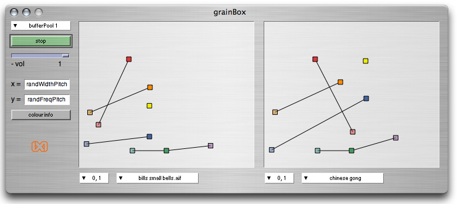

ixiQuarks : GrainBox

| GrainBox |
| The GrainBox is a two dimensional parameter space for granular
synthesis. The problem with granular synthesis is often how to represent
it graphically at the interface level as there are so many parameters involved.
Here we represent the parameters with coloured boxes in a two dimensional
space where boxes with related parameters are connected with lines. This
makes it easy for the musician to intuitively understand the state of the
sound engine by quickly glancing at the interface, as opposed to the complex
analysis of slider positions where one has to read the label of each slider. The audio stream of the GrainBox can be output on any audio bus and used as the source sound fed into and controlled by other instruments such as PolyMachine, Gridder or Predators. This way, the sound can be directly adjusted from the GrainBox application but utilised by the other pattern generating instruments that wrap the sound in an envelope. Of course, the GrainBox can also be used independently as sound texture generator. |